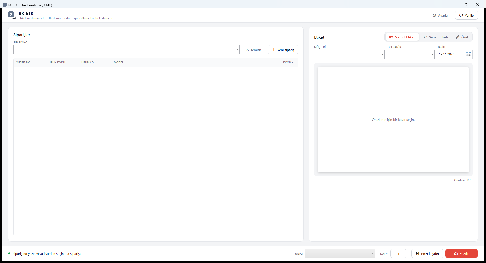
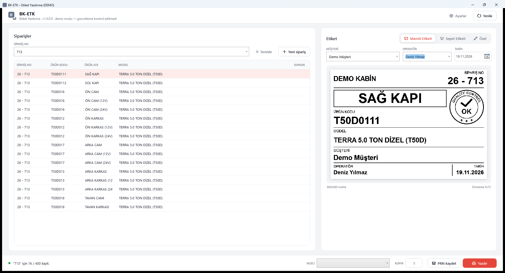
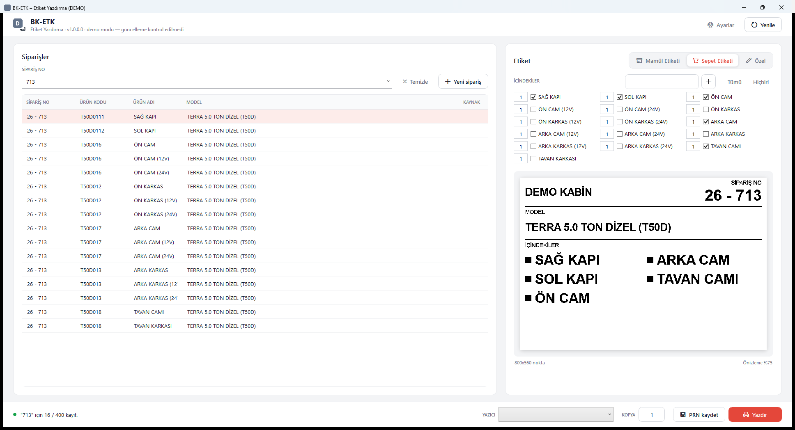
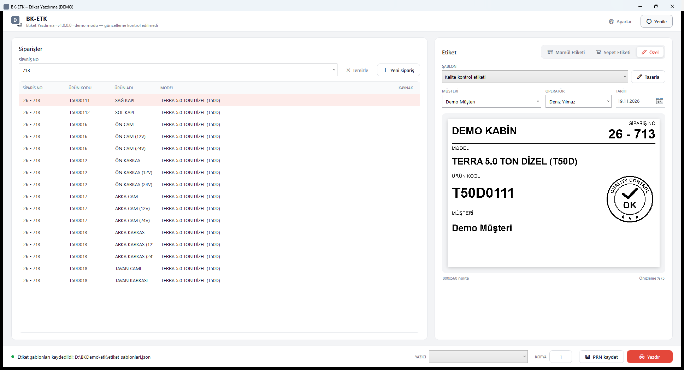
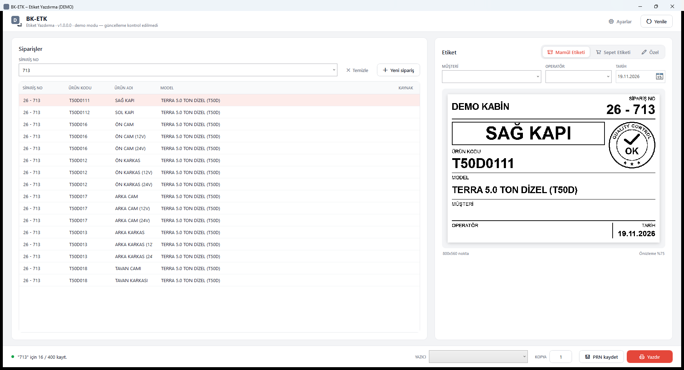
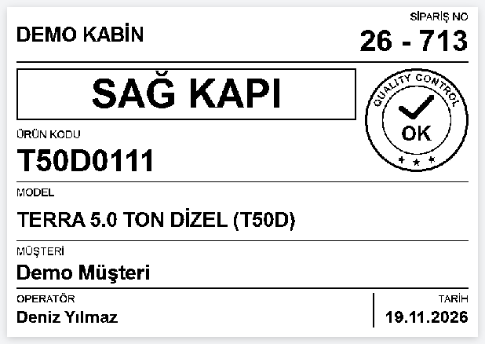
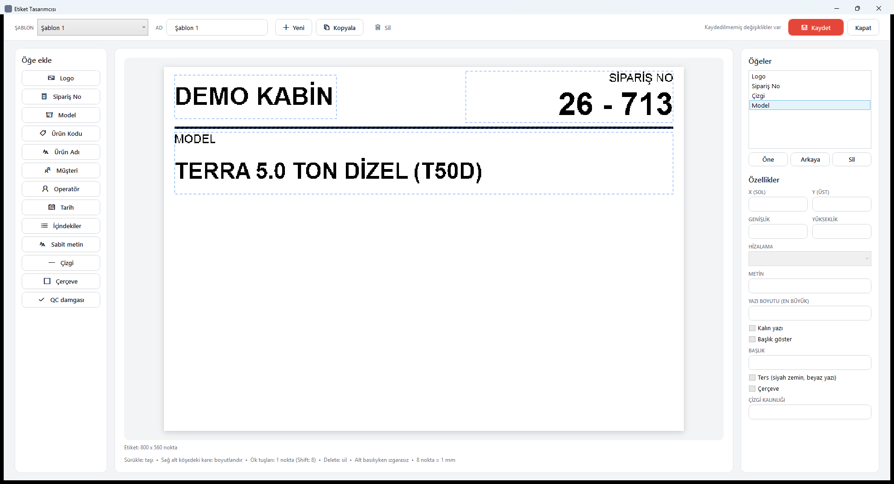
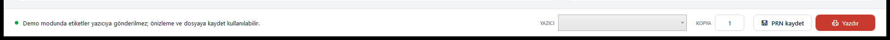
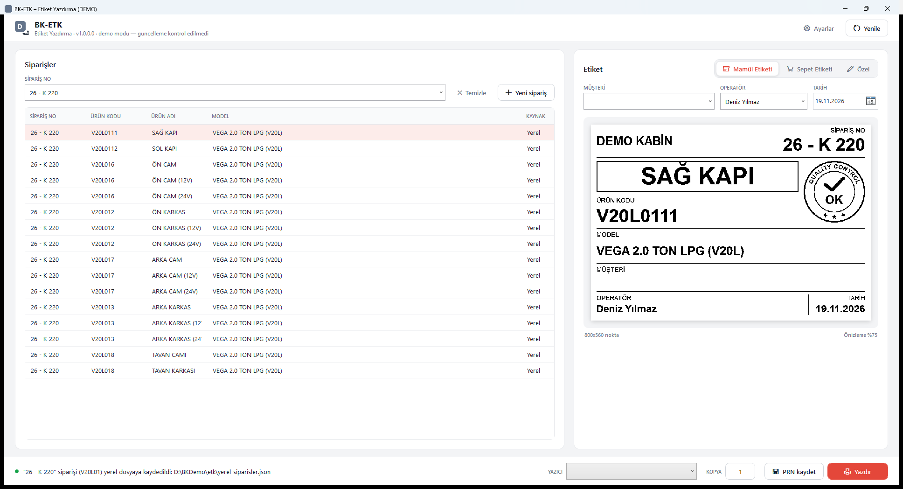

BK-ETK Etiket Yazdırma Rehberi
Siparişlerin parça, sepet ve özel etiketlerini hazırlayıp etiket yazıcısına basan uygulama. Rehber iki bölümden oluşur: önce etiket türleri ve pencereler özetlenir, ardından her biri demo siparişlerle adım adım anlatılır. Ekranlardaki bütün veriler uydurmadır: uygulama demo modunda, BK Sipariş rehberiyle aynı yerel test veritabanıyla açılmıştır.
Uygulama ne işe yarar?
BK-ETK, üretilen mamüller için etiket hazırlayan ve etiket yazıcısına basan uygulamadır.
Şablonla etiket tasarımıMamül, sepet ve özel etiketler için şablon tasarlama
Etiket basımıSeçilen parçaların etiketlerini etiket yazıcısına basma
Başlarken
Ana pencere

- Uygulama açılırken güncelleme klasörünü kontrol eder; yeni sürüm varsa kendini günceller ve yeniden açılır. Başlıktaki sürüm satırı sonucu gösterir.
- Siparişler, modeller, müşteri ve operatör listeleri açılışta bir kez okunur. Yenile hepsini veritabanından yeniden okur.
- Alttaki durum satırı yapılan işin sonucunu ya da hatayı yazar (yeşil nokta: tamam, kırmızı: hata).
- Etiket boyutu 100 × 70 mm’dir (800 × 560 nokta). Önizleme etiketin birebir görüntüsüdür.
Demo modu: Ekranlar uygulamanın --demo argümanıyla açılan demo modunda alınmıştır. Bu modda siparişler, modeller, müşteri ve operatör listeleri yalnızca yerel BKSiparis_Demo veritabanından gelir; yazıcıya hiçbir şey gönderilmez, güncelleme kontrolü yapılmaz, yerel dosyalar ayrı bir demo klasörüne yazılır. Etikette firma logosu yerine “DEMO KABİN” yazar. Siparişler, markalar, müşteriler ve kişiler uydurmadır.
1. Bölüm · Genel bakışÜç etiket türü ve uygulamanın pencereleri. Bir kutuya tıklayınca ilgili anlatıma gidersiniz.
Etiket türleri ve pencereler
Sağ üstteki etiket türü seçimi ve açılan pencereler
Etiket türleri

Mamül EtiketiHer parça için kalite kontrol etiketi

Sepet EtiketiBir siparişin sepetindeki parçaların listesi

ÖzelKendi tasarladığınız şablonla etiket
Pencereler
2. Bölüm · Ayrıntılı kullanımDemo sipariş 26 - 713 (TERRA 5.0 ton dizel) için mamül, sepet ve özel etiket; ardından veritabanında olmayan 26 - K 220 siparişinin elle eklenmesi.
Sipariş seçme
Sol panel › Sipariş No
- Sipariş No kutusuna yazdıkça tablo süzülür (ör. “713”); listeden de seçebilirsiniz. Temizle filtreyi kaldırır.
- Her sipariş, modelinin her parçası için bir satıra açılır: SAĞ KAPI, SOL KAPI, ÖN CAM, ÖN KARKAS, ARKA CAM, ARKA KARKAS, TAVAN CAMI ve TAVAN KARKASI (12V/24V çeşitleriyle). Ürün kodu, model kodunun sonuna parçanın sonekinin eklenmesiyle oluşur (T50D01 + 11 → T50D0111).
- Bir satıra tıklayınca önizleme o parçayı gösterir. Ctrl ya da Shift ile birden çok satır seçerseniz hepsi sırayla basılır.
- Kaynak sütununda “Yerel” yazan satırlar veritabanından değil, Yeni sipariş ile eklenen yerel kayıttan gelir.

Mamül Etiketi
Etiket › Mamül Etiketi
- Müşteri ve Operatör listeden seçilir ya da yazılır; yazdığınız metin adın herhangi bir yerinde aranır.
- Tarih bugündür; yazarak ya da takvimden değiştirebilirsiniz.
- Operatör boşken yazdırılamaz. Seçilen müşteri, yazdırma sonrası siparişe kaydedilir ve aynı sipariş bir dahaki seçilişinde kendiliğinden gelir.
- Sağdaki QUALITY CONTROL OK damgası kalite kontrolden geçen parçayı işaretler.

Sepet Etiketi
Etiket › Sepet Etiketi
- Sepete giren parçaları İÇİNDEKİLER listesinde işaretleyin. Tümü ve Hiçbiri hepsini seçer ya da temizler.
- Parçanın solundaki kutuya adet yazın; 1’den büyükse etikette “x adet” olarak basılır.
- Listede olmayan bir parçayı (ör. SU OLUĞU) üstteki kutuya yazıp + ya da Enter ile ekleyin; eklenen parça kalıcı olarak listede kalır.
- Sepet etiketi sipariş ve model başına bir tane basılır; en az bir parça işaretli olmalıdır.
Özel etiket
Etiket › Özel
- Şablon listesinden kendi tasarladığınız şablonu seçin.
- Tasarla etiket tasarımcısını açar: yeni şablon oluşturur ya da seçili şablonu düzenler.
Etiket Tasarımcısı
Özel › Tasarla

- Soldaki Öğe ekle düğmeleri etikete logo, sipariş no, model, ürün kodu, ürün adı, müşteri, operatör, tarih, içindekiler, sabit metin, çizgi, çerçeve ya da QC damgası ekler.
- Öğeyi sürükleyerek taşıyın, sağ alt köşesindeki kareden boyutlandırın. Ok tuşları 1 nokta (Shift ile 8 nokta) kaydırır, Delete siler; Alt basılıyken ızgaraya yapışmaz. 8 nokta 1 mm’dir.
- Sağdaki Öğeler listesinden öğe seçilir; Öne, Arkaya ve Sil sırayı ve varlığı değiştirir.
- Özellikler: konum, boyut, hizalama, metin, yazı boyutu, kalın yazı, başlık, ters (siyah zemin) ve çerçeve.
- Üstte şablon seçilir, Ad değiştirilir; Yeni, Kopyala ve Sil şablon işlemleridir. Kaydet şablonları yazar, “Kaydedilmemiş değişiklikler var” uyarısı kaybolur.
Yazdırma
Alt çubuk › Yazıcı, Kopya, PRN kaydet, Yazdır
- Yazıcı listesinden etiket yazıcısını seçin; ayar yoksa adında “Argox” geçen ilk yazıcı seçilir.
- Kopya her etiketin kaç kez basılacağıdır.
- Yazdır seçili satırların etiketlerini basar. Yazdırma yöntemi ayar dosyasından gelir: Windows sürücüsü üzerinden görüntü olarak ya da PPLB komutlarıyla doğrudan.
- PRN kaydet aynı komutları bir .prn dosyasına yazar; yazıcıyı denemeden çıktıyı saklamak için kullanılır.

Yeni sipariş
Sol panel › Yeni sipariş
- Veritabanında henüz olmayan bir sipariş için etiket basmanız gerekirse Yeni sipariş’e basın.
- Sipariş no yazın ve Model listesinden modeli seçin. Kaydet siparişi bu bilgisayardaki yerel dosyaya yazar; veritabanına yazılmaz.
- Sipariş, modelin parçalarıyla tabloya eklenir ve Kaynak sütununda “Yerel” görünür.

Ayarlar
Sağ üst › Ayarlar
- Güncelleme klasörü: uygulamanın her açılışta version.txt dosyasına baktığı klasör (ağ yolu olabilir). Gözat ile seçin.
- Kontrol Et klasördeki sürümü okuyup kurulu sürümle karşılaştırır.
- Ayar bu bilgisayara özeldir; güncellemede kurulumdaki ayar dosyası korunur.
- Veritabanı bağlantısı, sorgular, parça listesi ve etiket ayarları (koyuluk, hız, kaydırma) exe yanındaki appsettings.json dosyasındadır.